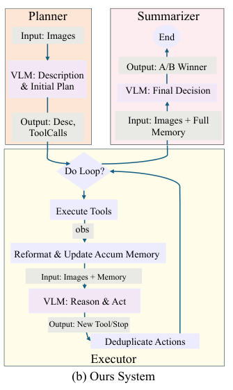
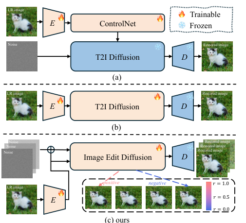

I am a master's student in Computer Science and Technology at
Nankai University, supervised by Prof. Chongyi Li. I also received my bachelor's degree in Data Science and Big Data Technology from Nankai University.
My research focuses on multimodal large language models (MLLMs), agentic systems, and explainable image quality assessment (IQA).
Previously, I was an algorithm intern at the
ByteDance Multimedia Evaluation Lab, where I worked on VLMs for image quality understanding and assessment,
covering data annotation and curation, chain-of-thought data construction, SFT and RL post-training (GRPO, DAPO), and deployment.
Apr. 2026 Our team won 2nd place in the NTIRE 2026 RAIM Challenge (Track 1: Professional Image Quality Assessment), and our agentic pairwise IQA paper was accepted by CVPRW 2026.
2026 DNF-SR was accepted by CVPR 2026.
Sep. 2025 I started my master's study at Nankai University.
2025 I organized the MIPI 2025 Challenge on Detailed Image Quality Assessment; the challenge report appears at ICCVW 2025.
Jul. 2025 Our team won 3rd place in the VQualA 2025 GenAI-Bench AIGC video quality assessment challenge (ICCVW 2025).
Publications
* Corresponding author. First-author papers are highlighted. See also my Google Scholar.
A large-scale visual distortion assessment instruction-tuning dataset and benchmark for UGC images (11.5K images, 36K distortion boxes, 534K instruction data) that unifies distortion grounding, low-level perception, and quality description, built with a grounding- and perception-guided chain-of-thought pipeline.

A VLM-Driven Agentic System for Multi-Dimensional Pairwise Image Quality Comparison Wenjie Liao,
Shuhao Han,
Jiaxin Song,
Jieyu Yuan*,
Chunle Guo,
Chongyi Li NTIRE 2026 RAIM Challenge, Track 1: 2nd place CVPRW 2026
A modular agentic framework for explainable pairwise IQA: a Planner, an Executor, and a Summarizer collaborate with dimension-specific analysis tools, trained with SFT and RL, to reach traceable, expert-aligned preference decisions.

DNF-SR: Dual-Input and Negative-Aware Feature Fine-Tuning for Real-World Image Super-Resolution Shuhao Han,
Wenjie Liao,
Hayden Vance,
Hang Dong,
Rui Zhang,
Chun-Le Guo,
Chongyi Li* Code CVPR 2026
A one-step diffusion Real-ISR framework that feeds both the LR image and its noisy version into an image-editing diffusion model, with Negative-aware Feature Fine-Tuning (NF²T) that uses aggregated IQA rewards to build positive and negative optimization directions.
Report of the Detailed IQA track of MIPI 2025, which I organized; the track benchmarks distortion grounding, low-level perception, and quality reasoning.
IOVQA fine-tunes Qwen2.5-VL for AIGC video quality scoring with integer-only labels and a target-mask loss on the score tokens; 3rd place in the VQualA 2025 GenAI-Bench challenge.
Education and Experience
Nankai University, Tianjin, China
2025.09 - 2028.06 (expected)
M.S. in Computer Science and Technology Advisor: Prof. Chongyi Li
ByteDance, Multimedia Evaluation Lab, Shanghai, China
2024.12 - 2026.04
Algorithm Intern VLMs for image quality understanding and assessment: data curation, CoT data construction, SFT and RL post-training, and deployment.
Nankai University, Tianjin, China
2021.09 - 2025.06
B.S. in Data Science and Big Data Technology